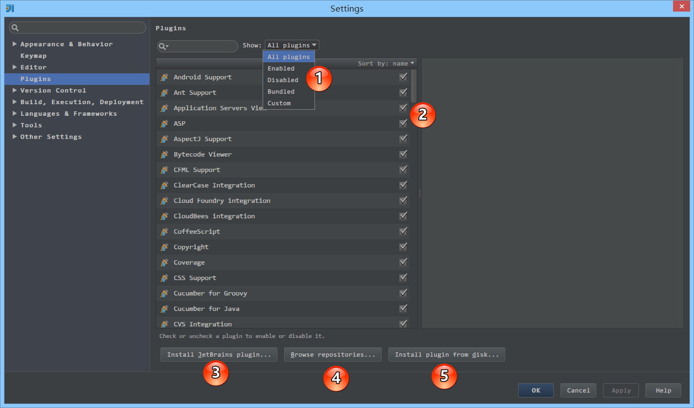
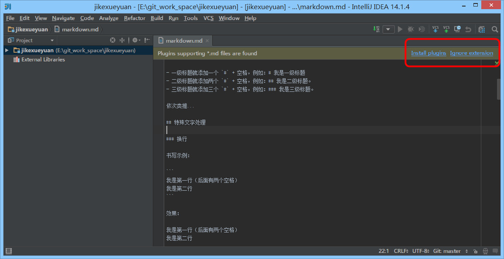
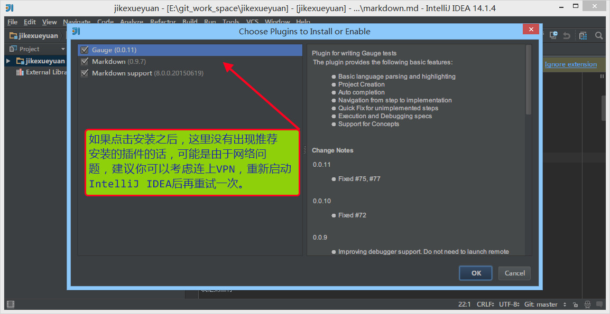
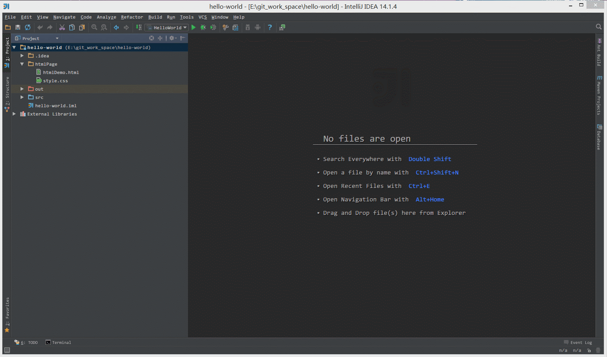

插件的使用
插件的设置
在 IntelliJ IDEA 的安装讲解中我们其实已经知道，IntelliJ IDEA 本身很多功能也都是通过插件的方式来实现的，只是 IntelliJ IDEA 本身就是它自己的插件平台最大的开发者而已，开发了很多优秀的插件。

- 如上图标注 1 所示，IntelliJ IDEA 对插件进行了很好的分类：
All plugins显示所有插件。Enabled显示当前所有已经启用的插件。Disabled显示当期那所有已经禁用的插件。Bundled显示所有 IntelliJ IDEA 自带的插件。Custom显示所有我们自行安装的插件，如果你自己装了很多次插件的话，这个选项会用得比较多。- 如上图标注 2 所示，启用的插件是被勾选的，如果要禁用一个插件，去掉勾选即可。
- 如上图标注 3 所示，弹出 IntelliJ IDEA 公司自行开发的插件仓库列表，供下载安装。
- 如上图标注 4 所示，弹出插件仓库中所有插件列表供下载安装。
- 如上图标注 5 所示，浏览本地的插件文件进行安装，而不是从服务器上下载并安装。
- 需要严重注意的是：在国内的网络下，很经常出现显示不了插件列表，或是显示了插件列表，无法下载完成安装。这时候请自行开VPN，一般都可以得到解决。


- 如上图红圈所示，如果 IntelliJ IDEA 打开一个它可以识别并且支持的文件类型，它会提示你它有对应的插件进行支持，你可以安装对应的插件来加以兼容此类文件。
插件的安装

- 如上图 Gif 演示，在线安装 IntelliJ IDEA 插件库中的插件。

- 如上图 Gif 演示，离线安装本地插件文件。
插件推荐
lombok 插件的使用
- lombok 插件官网：https://plugins.jetbrains.com/plugin/6317-lombok-plugin
- 推荐 IntelliJ IDEA 插件库搜索安装：
- File > Settings > Plugins > Browse repositories... > Search for "lombok" > Install Plugin
- IntelliJ IDEA 配置方法，官网有说明（该配置是 Project 级别，不是 IDE 全局的）：https://github.com/mplushnikov/lombok-intellij-plugin#required-intellij-configuration